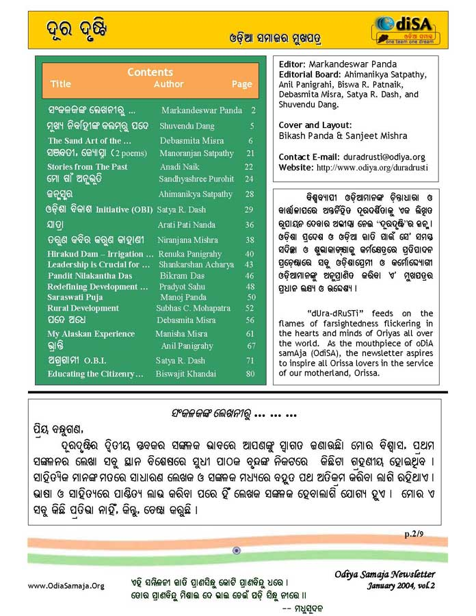

Read this issue page by page · All magazine issues
Original website page images from the additional backup · Separate saved revision
Restoration links to preserved documents. These are file downloads; the archive has no editing or submission features.
Saved backup file; retain separately from published downloads. Filename labels do not establish revision order or final publication status.
Saved backup file; retain separately from published downloads. Filename labels do not establish revision order or final publication status.
Saved backup file; retain separately from published downloads. Filename labels do not establish revision order or final publication status.

Original address: http://www.duradrusti.org/jan2004/index.asp